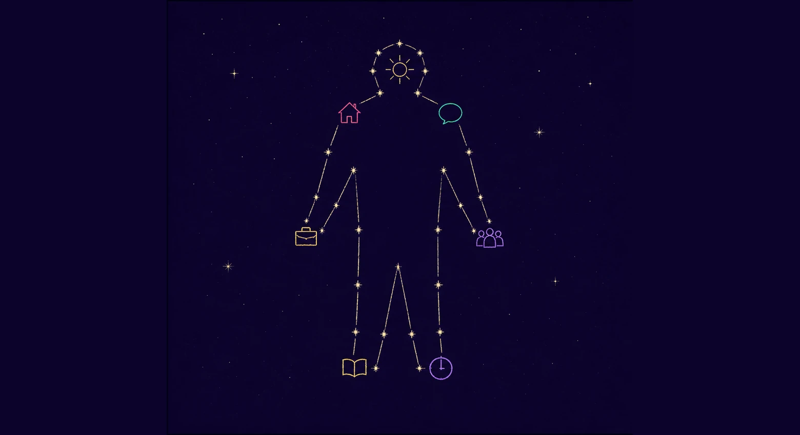
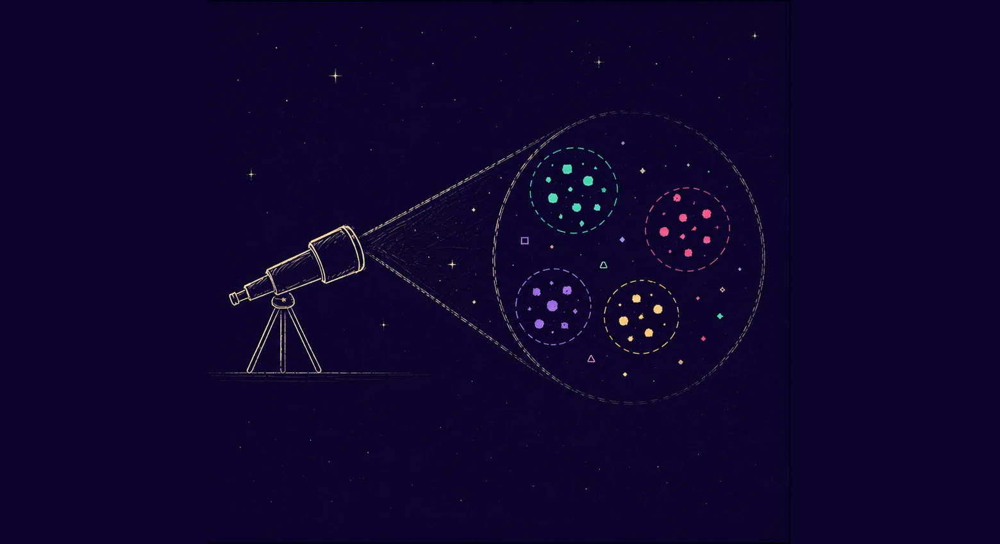

FOR PEOPLE
Build a Complexity Profile
See how the same health question changes when support understands capacity, cost, housing, care and other real-life pressures.
Open the personal demoEvery search, question and conversation tells us something about what people need and what the health system might be missing.
Better answers for you. Better intelligence for everyone.
Starbound turns digital health-seeking into better answers for people and better intelligence for health systems.
A note from Starbound Why we're building thisTWO SIDES OF THE SYSTEM
Each prototype tells a different part of the same story.

FOR PEOPLE
See how the same health question changes when support understands capacity, cost, housing, care and other real-life pressures.
Open the personal demo
FOR PROVIDERS
See how aggregated, privacy-protected patterns can help services understand shared barriers and ask better questions.
Open the provider demoTell us what you want to understand. We’ll help you find the signals.